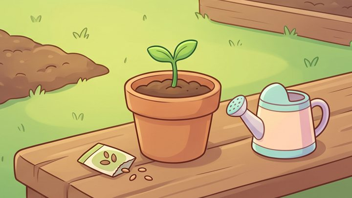

كثبان الألعاب

ازرع نبتة
35 د
توقفت عند
البداية
أكمل من حيث توقفت
من البداية
انتهى وقت اليوم
حفظنا مكانك عند
البداية
، وتكمل من هنا في المرة القادمة
اطلب وقتاً إضافياً من ولي أمرك أو معلّمك
العودة إلى الخريطة

 35 د
35 د
35 د
35 د